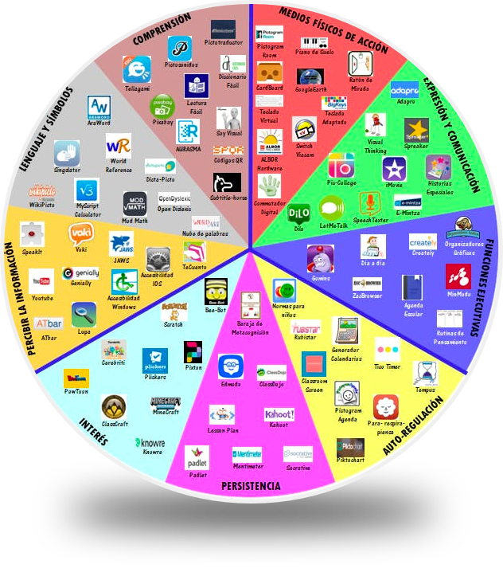

Para trabajar la tecnología desde un enfoque inclusivo, hemos utilizado la Rueda DUA, un recurso que organiza herramientas digitales según los principios del Diseño Universal para el Aprendizaje (DUA). Su finalidad es asegurar que todo el alumnado pueda participar, comprender y expresar sus aprendizajes mediante distintos medios y apoyos.

(Coloca aquí la imagen de la Rueda DUA si la tienes)
Entre las herramientas recogidas en la Rueda DUA, hemos seleccionado Book Creator, vinculada al principio Acción y Expresión. Esta aplicación permite que los niños y niñas muestren lo que saben mediante diferentes lenguajes:
Hemos elegido este recurso porque:
En el tutorial explicamos qué es Book Creator y cómo crear un libro digital desde cero. Se muestran las herramientas principales: añadir imágenes, dibujar, grabar voz y escribir texto.
(Añade aquí vuestro vídeo tutorial)